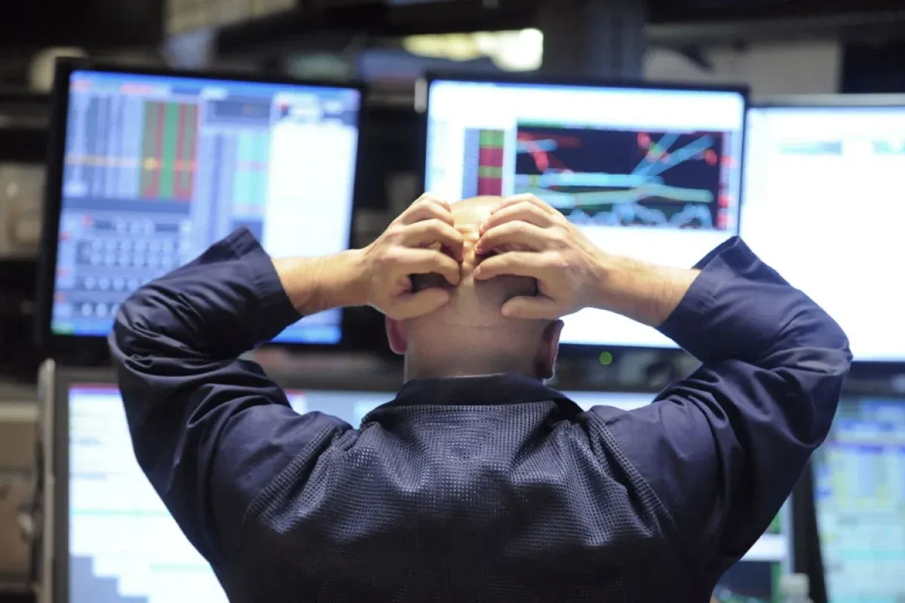
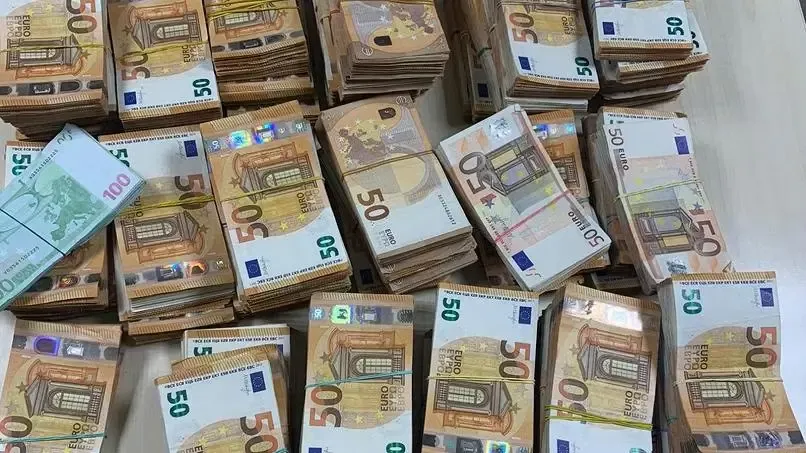
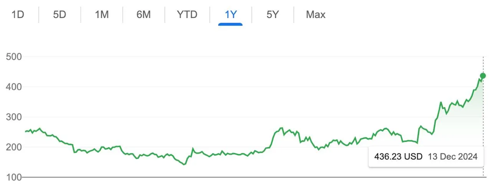

Mi nombre es yermaz y muchos de ustedes me conocen en el Foro. Cualquiera que me conozca sabe que mis ingresos han sido bastante buenos en los últimos meses. Por supuesto, no soy un experto, solo he ganado un poco de dinero, eso es todo, así que no hay nada que superar. Pero como introducción, quiero decirte algo de mi propia experiencia.
Unos meses más tarde, me compré un coche nuevo, amigos.
Con el auge silencioso de la era del capital, el número de personas interesadas en el mercado de valores aumenta todos los días. Creo que la mayoría de ustedes han experimentado la emoción de ganar en el clímax y el dolor de perder en la depresión. Como otros inversores, he pasado por momentos difíciles, pero un día me uní accidentalmente a un grupo donde conocí a algunas personas muy experimentadas. Al intercambiar ideas, superé mi miedo a la pérdida. Hoy, mi vida incluye viajar con mi familia, revisar cuentas bancarias y disfrutar del crecimiento de la riqueza.
Nunca olviden la gratitud, amigos. Así que hoy, aunque tengo algo de tiempo, quiero escribir este artículo. Aquí también quiero expresar mi sincero agradecimiento a este gran maestro de la bolsa de valores, que me ha traído buena suerte y prosperidad.
Si mi amigo termina este artículo con paciencia, un día, una cuenta bancaria de 7 - 8 dígitos no será un sueño lejano para ti, como un recordatorio que te doy.
Unirse al Grupo WhatsApp de forma gratuita (50 plazas)Tengo 28 años y soñé con enriquecerme algún día desde que era un niño. Después de graduarme de la universidad, comencé a trabajar en una gran Universidad Estatal de 9 a 17 de la mañana y viví una vida tranquila y directa.
Hasta septiembre del año pasado... Fue entonces cuando comencé a lidiar con el mercado de valores y mi vida comenzó a cambiar lentamente. Antes de eso, vivía una vida muy tranquila. Cuando entré por primera vez en la bolsa, no entendía nada, miraba el mapa de velas y, para ser honesto, ni siquiera sabía lo que estaba haciendo.
En mi primer intento, compré dos acciones completamente por casualidad. Solo miré la forma del gráfico y pensé: "este debe ser el punto más bajo aquí", y luego lo compré.
Al principio fui muy cauteloso, solo Invierto 26.200 euros en acciones. No sabía lo que significaba la inversión a largo plazo en ese momento. Tampoco planeo mantener mis acciones durante mucho tiempo. Mi único objetivo es revisar la cuenta todos los días, vender las ganancias y luego decir "persistiré" y luego esperar.
Luego me dije a mí mismo: "vamos a diversificar el riesgo" y comencé a comprar otras acciones, pero en ese momento no estaba realmente preocupado por el mercado, no sabía cómo analizarlo. solo me Enfoco en acciones individuales, básicamente basadas solo en productos.
Desafortunadamente, la mayoría de las acciones que compré se derrumbaron meses después y, para ser honesto, fue el momento más difícil de mi vida.
Después de esta caótica etapa de la inversión de capital, me dije a mí mismo: "esto no continuará, tengo que cambiar algunas cosas ahora. "No basta con comprar acciones a ciegas. tengo que aprender análisis fundamentales, cómo comerciar, así que empecé a estudiar Internet y me dediqué a los artículos.
Unirse al Grupo WhatsApp de forma gratuita (50 plazas)Un día vi una publicación en el Foro de la bolsa de valores en la que un principiante escribió que después de seguir a un experto en transacciones, ganó mucho dinero en seis meses. ¿Pensé para mí mismo: "¿ cómo puede una persona tan inexperta obtener tanto? "Tenía mucha curiosidad, así que decidí agregar a este experto en transacciones y pensé:" ¿ qué he perdido? "
Así que comencé mi viaje de ganancias. Nunca pensé que esto pasaría, pero la primera acción que mi mentor me recomendó fue muy popular. En solo dos días tuve una hermosa victoria y cada vez que pienso en ello tengo que sonreír.
Cuanto más hablo con mi tutor, más me doy cuenta de lo profundo que sabe sobre transacciones e inversiones en acciones. Con una actitud positiva, desarrolló bien su estrategia y realmente se convirtió en un profesional. Lo más importante para comprar acciones es saber el momento adecuado para comprar y vender. Pero también es importante elegir las acciones adecuadas. Cuando las acciones suban, no seas demasiado codiciosas, de lo contrario los grandes jugadores del mercado te engañarán. Si las acciones caen, no entre en pánico y venda de inmediato; Tienes que aprender a rastrear el flujo de capital, aprender a vender y comprar.
A partir de ese momento, empecé a sentir que la verdadera oportunidad de ganar se acercaba cada vez más, amigos. A veces hueles algún olor... Así es como me siento.
Estaba a punto de casarme y mi familia me dio 26.200 euros para comprar un coche. ¿Pero ¿ qué he hecho? Invierto todo mi dinero en el mercado de valores y digo que voy a resignarme. Siempre le digo a mis amigos: "mi sueño de enriquecerme de la noche a la mañana nunca se ha detenido. "Por eso di un paso audaz, confié todo el dinero a mi mentor y compré las acciones que recomendó, y ahora es un fracaso total o un verdadero avance.
Unirse al Grupo WhatsApp de forma gratuita (50 plazas)En retrospectiva, realmente puedo decir que tuve la suerte de tomar esta decisión. En los meses siguientes, las ganancias aumentaron significativamente. Cuando vi los números en la cuenta, me sorprendió y me alegré. Compré una casa nueva y un coche. Mi vida es realmente plena, tranquila y feliz ahora. ¿A mi lado, tengo una familia completa - ¿ qué más quieres?
Creo que muchos de mis amigos aquí son como yo: la verdadera razón por la que negociamos es mejorar nuestras vidas y las de nuestras familias. El dinero no caerá del cielo, así que espero que todos podamos continuar nuestro camino, beneficioso y pacífico. ¡Ganar es bueno, amigos, ¡ pero también debes mantener la cabeza tranquila!
¡¡ amigos, unámonos, pequeños inversores! ¡¡ vamos de la mano en este mundo bursátil y seamos ricos juntos! ¡Este camino es difícil de caminar, ¡ pero si avanzamos lado a lado, todo es posible!
Amigos, la razón por la que cuento esta historia no es "soy un experto en inversión bursátil" o "conozco el mercado mejor que nadie". la lección más importante aquí es: hay maestros en cada campo. si no sabes nada, tienes que confiar en el conocimiento de los que lo conocen. es tan simple como eso.
¡¡ así son las cosas! 👍 El mercado de valores no es solo un gráfico, la psicología es igualmente importante. Hay altibajos, pero lo más importante es no rendirse. Quién sabe, tal vez el próximo candelabro te lleve a la cima. Solo necesitamos paciencia, comprensión y personas adecuadas a nuestro lado. ¡¡ vamos, amigos, que la cartera se vuelva verde y el Estado de ánimo se mantenga alto! 💹📊🚀
¡¡ hermano mío, estoy seguro de que volverás a tener plena confianza en tu inversión de capital! ¡¡ volverá a experimentar la sensación de ganar y obtener satisfacción a medida que su cuenta crezca! Tu fe en el acuerdo volverá y te gustará ver crecer tu dinero de nuevo. ¡¡ recuerda quién se cae, quién se levanta, quién espera, quién gana! 💪📈✨
Mi vida actual es realmente feliz. ¿Amigos, ¿ no es esto lo que llamamos ganancias? No se trata solo del dinero en tu bolsillo, sino también de lo lleno que está tu corazón. ¡¡ esta es la verdadera victoria! 💰🧘♂️🍀